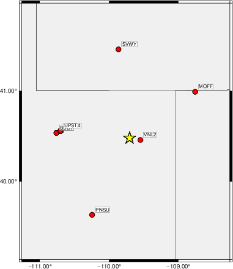
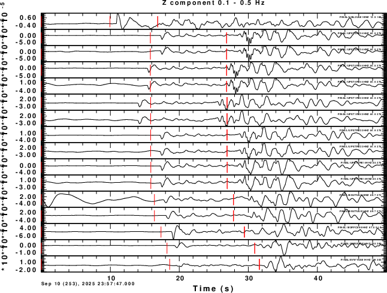
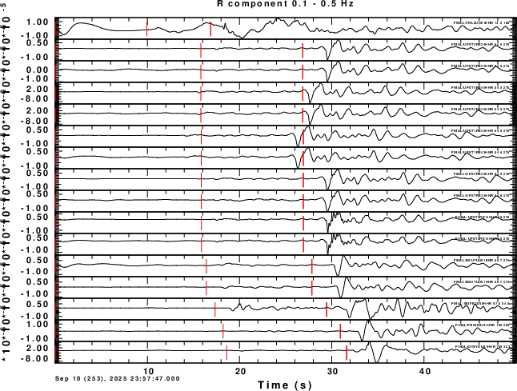
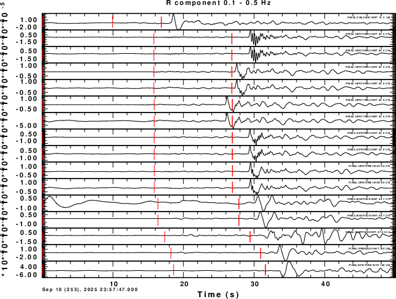
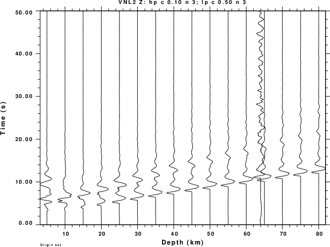
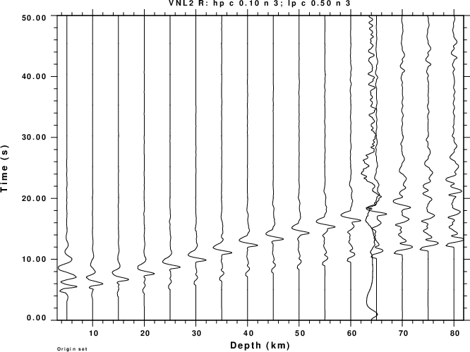
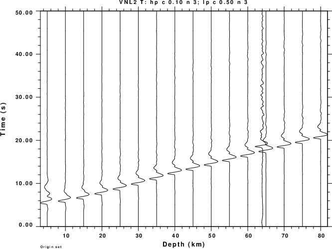
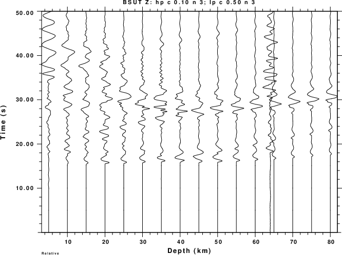
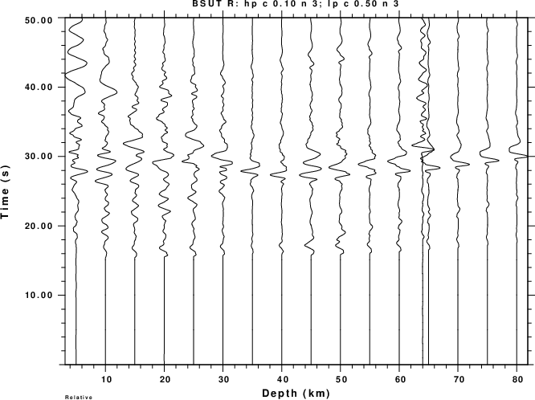
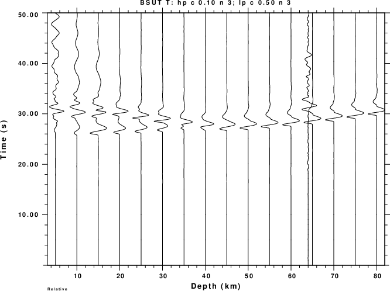

The Utah earthquake of 2025/09/10 23:57:47 is interesting because the network depth was 69.4km and the SLU moment tensor depth was 64km. Such a deep event is rare in most of the continent interior. The moment tensor solution is detailed as https://www.eas.slu.edu/eqc/eqc_mt/MECH.NA/MECH.NA.2025/20250910235747/HTML.REG/index.html .
From the point of view of modeling an accelerometer was located within an epicentral distance of 15 km, and it may be interesting to model the waveforms at frequencies greater than the 0.05-0.15 Hz band used for the moment tensor inversion.
the following shell scripts were used to prepare the observed data:
The DOROT scripts uses gsac to make trace plots and to create a shell script (map5.sh) that uses GMT to make a map showing the epicenter and the stations. The trace plots are in order in increasing epicentral distance. These figures are shown here.
|  |  |
|  |  |
Examining the traces, note that UPST3 and UPST4 arrives seem to arrive early early This is easily seen by focusing on the first red tic, which indicates the predicted P time. the P arrival of the other stations occurs about 1-2 seconds after this red marker. The lack of agreement just indicates that the velocity WUS velocity model may not be appropriate for this region. Perhaps there is a clock problem at UPST3 and UPST4.
For the purpose of modeling, only the accelerometer data at VNL2 (distance of 13.5 km) and BSUT (distance of 89.7km). The details are
Waveform Epicentral Distance 9km) Azimuth VNL2UU01ENR 13.48988 99.97 VNL2UU01ENT 13.48988 99.97 VNL2UU01ENZ 13.48988 99.97 BSUTUU01HHR 89.73962 274.35 BSUTUU01HHT 89.73962 274.35 BSUTUU01HHZ 89.73962 274.35
In order to compare the observed waveforms to model based predictions, it is necessary to compute the Green's functions. The organization for the Green's functions is given MakeGreen.tgz. To unpack and compute the Green's functions, do the following:
gunzip -c MakeGreen.tgz | tar xf - cd GREEN/nWUSHF.REG DOIT.WKdeep
The DOIT.WKdeep will compute Green's functions for the WUS.mod at source depths of 5, 10, ..., 75 and 80 km. After the computations are completed, the nWUSHF.REG directory will appear as this when using the 'ls -F' listing command:
0050/ 0250/ 0450/ 0650/ DOIT.WKdeep* 0100/ 0300/ 0500/ 0700/ MKW* 0150/ 0350/ 0550/ 0750/ Model/ 0200/ 0400/ 0600/ 0800/ WUS.mod
The naming convention is such that the 0600 directory contains the Green's functions for a 60.0 km source depth. Th contents of the 0600 directory will be
001400600.RDD 001400600.TSS 009000600.RDD 009000600.TSS dfile
001400600.RDS 001400600.ZDD 009000600.RDS 009000600.ZDD hspec96.dat
001400600.REX 001400600.ZDS 009000600.REX 009000600.ZDS hspec96.grn
001400600.RSS 001400600.ZEX 009000600.RSS 009000600.ZEX W.CTL
001400600.TDS 001400600.ZSS 009000600.TDS 009000600.ZSS
The naming convention created by the use of the f96tosac -G command is DDDDdHHHh.GRN, which represents an epicentral distance of DDDD.d km and a source depth of HHH.h km.
The DOIT.WKdeep script created 1024 sample long time series with a sampling interval of 0.05s. The source time function has a duration of 0.2s. For the model parameters used, the Green's functions represent ground velocity in cm/s for a unit step-like source time function with a moment of 1.0e+20 dyne-cm.
Assuming that your top level directory now contains DODECON, DOROT, DOWS, MakeGreen.tgz, GOOD/ FINAL/ GREEN/ and the original files from the data center, the synthetic seismogram scripts will assume that the Green's functions are in GREEN/nWUSHF.REG. h
The annotated scripts DODEPTHVNL2 and DODEPTHBSUT compute mechanism predicted ground velocities from the Green's functions for each station. These are then compared to the observed waveforms. The plots are filtered ground velocity. However true amplitude are not displayed. Note the display would be better if I had picked the P arrival on the observed waveforms and then aligned the traces with P.
| VLN2 - Z | VLN2 - R | VLN2 - T |
|  |  |  | BSUT - Z | BSUT - R | BSUT - T |
|  |  |  |